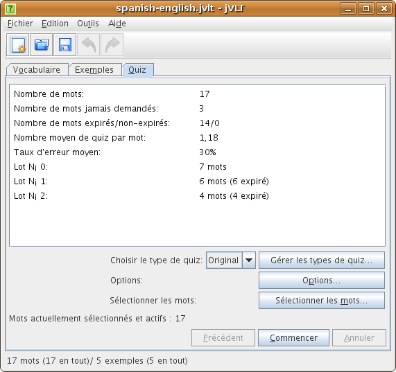
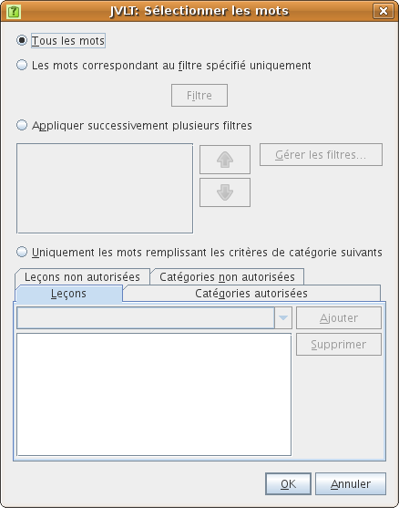
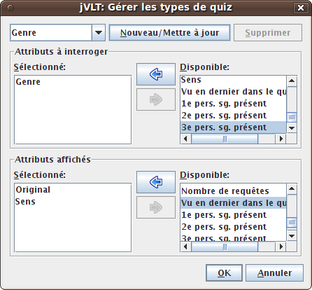
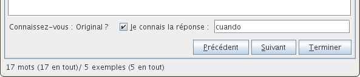
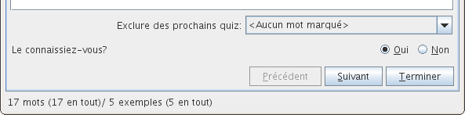
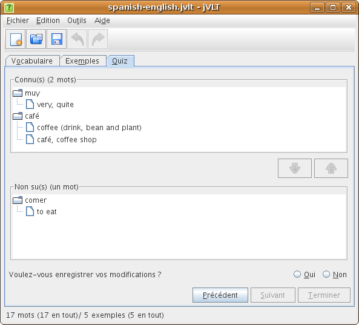

jVLT - outil d’apprentissage du vocabulaire
Quiz
- Lot n° 0: 0 jours
- Lot n° 1: 1 jours
- Lot n° 2: 3 jours
- Lot n° 3: 9 jours
- Lot n° 4: 27 jours
- Lot n° 5: 81 jours
- Lot n° 6: 283 jours
- Lot n° 7: 849 jours

Avant le quiz
Avant de commencer, vous pouvez restreindre le quiz à certains groupes de mots en cliquant sur le bouton “Sélectionner les mots…”, ce qui ouvre une boîte de dialogue du même nom. Dans cette fenêtre, on vous propose quatre méthodes de sélection des mots :- Tous les mots : vous serez interrogés sur tous les mots.
- Les mots correspondant au filtre spécifié uniquement : Seuls les mots correspondant à un certain filtre vous seront demandés. Si cette option est choisie, il vous faudra spécifier un filtre en cliquant sur le bouton “Filtre”. La boîte de dialogue qui s’ouvre alors est décrite ici.
- Appliquer successivement plusieurs filtres : Vous pouvez aussi sélectionner plusieurs filtres qui seront appliqués successivement. Par exemple, vous pouvez spécifier que vous serez d’abord interrogé sur tous les mots qui n’ont pas été testés, puis sur les mots d’une certaine leçon. Vous pouvez ajouter de nouveaux filtres en cliquant sur le bouton “Gérer les filtres…”.
- Uniquement les mots remplissant les critères de catégorie suivants : Choisissez cette option si vous voulez sélectionner rapidement les catégories sur lesquelles vous (ne) souhaitez (pas) être interrogé.

jVLT interroge sur le champ “Original” par défaut. Vous pouvez concevoir d’autres types de quiz en paramétrant la fenêtre de dialogue qui apparaît après avoir cliqué sur “Gérer les types de quiz”.

Dans cette fenêtre, vous choisissez le champ sur lequel vous serez interrogé, et les champs qui seront affichés lors des questions. Vous devez aussi donner un nom au type de quiz nouvellement créé en saisissant un nom dans le champ de texte en haut de la fenêtre, puis en cliquant sur “Nouveau/mettre à jour”. Vous pouvez aussi modifier les types de quiz déjà existants en les choisissant dans le menu déroulant à droite du champ de texte, puis en cliquant sur “Nouveau/mettre à jour” une fois les modifications saisies.
Après avoir ajouté un nouveau type de quiz et fermé la fenêtre de dialogue en cliquant sur “OK”, vous pouvez sélectionner le nouveau type de quiz dans le menu déroulant “Choisir le type de quiz”.
Pendant le quiz
En fonction des configurations des Préférences de quiz, un quiz peut être effectué de deux façons différentes. Une première possibilité : vous tapez la solution comme dans l’image ci-dessous.
Après avoir cliqué sur “Suivant”, la solution s’affiche et un message vous indiquant si votre réponse est juste ou fausse apparaît.

Une seconde possibilité : vous ne tapez pas la solution (vous pouvez l’écrire sur une feuille si vous préférez), et (après avoir cliqué sur “Suivant”) jVLT vous demande si vous connaissiez la bonne réponse.
Vous pouvez annuler un quiz à n’importe quel moment en cliquant sur “Arrêter”. La section suivante décrit ce qui se passe ensuite.
Après le quiz
Si vous avez décidé de finir le quiz, jVLT vous demande si vous voulez revoir les mots que vous ne connaissiez pas. Ensuite, deux listes s’affichent : elles montrent respectivement les mots sus et ceux non sus. Si vous avez classé des mots sus dans la catégorie des non sus et vice-versa, vous pouvez alors corriger vos erreurs en choisissant les mots concernés et en cliquant sur les flèches. Enfin vous pouvez décider d’enregistrer les résultats de ce quiz afin d’en tenir compte lors des prochains quiz.